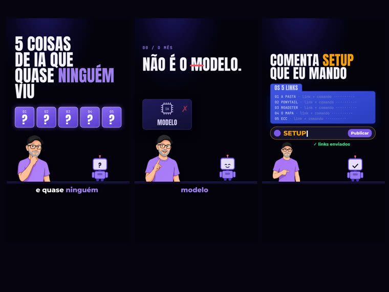
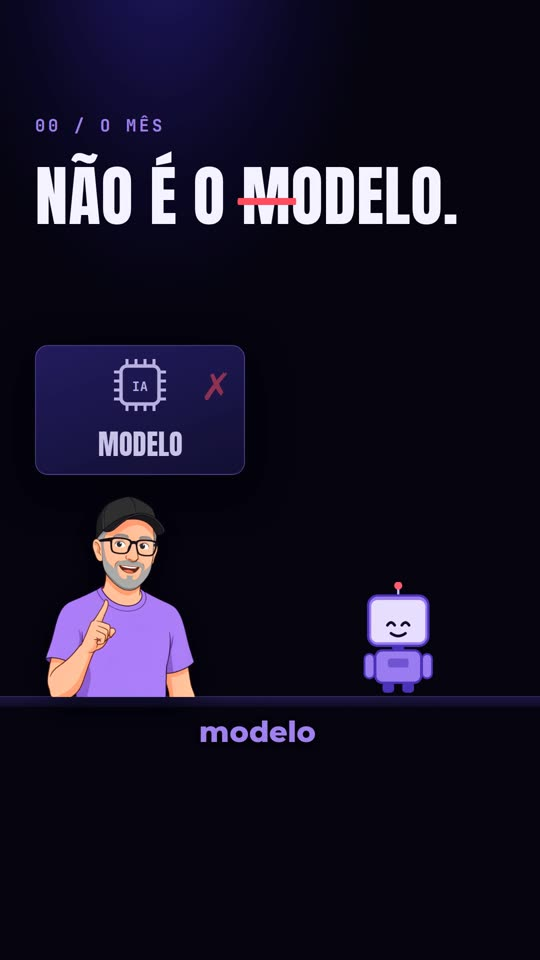
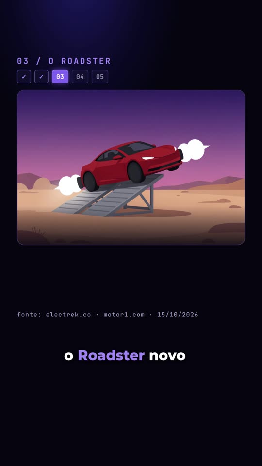
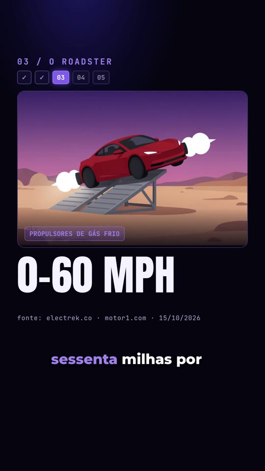
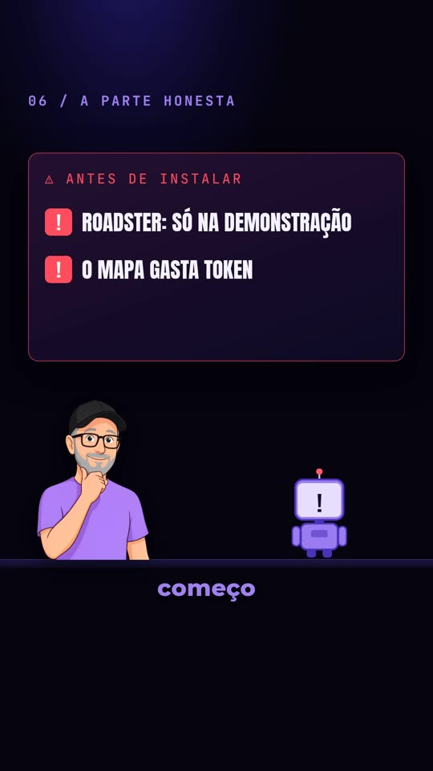
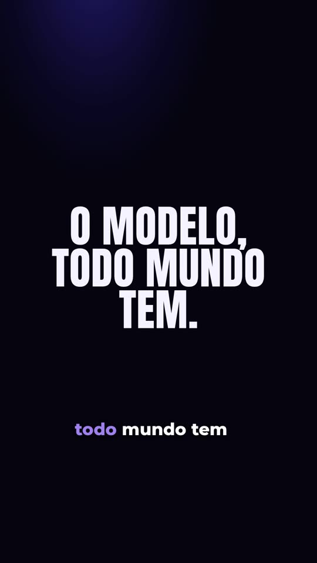
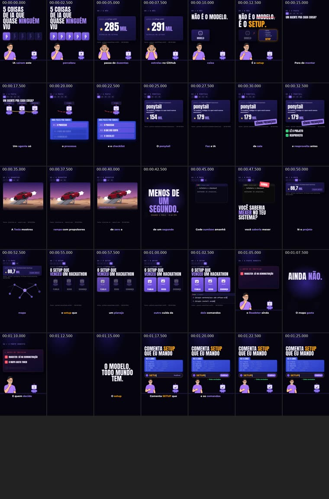

Do roteiro ao reel ilustrado, sem pagar nada
Você escreve um roteiro.json; o rtexjp devolve um reel vertical 1080×1920 com avatar ilustrado do Nei, mascote robô, voz do Nei e um único pedido: "comenta PALAVRA".

O rtexjp é um motor que monta vídeos curtos verticais (reels) ilustrados, em roxo, a partir de um roteiro escrito num arquivo de texto (roteiro.json). É o motor que o Nei usa nos reels do INEMA, aberto para quem quiser estudar ou adaptar: sem gravar a si mesmo e sem pagar serviço de avatar. Ele gera a voz, desenha cada cena quadro a quadro, mistura a trilha e confere sozinho se o vídeo segue o formato. Precisa de um computador com placa de vídeo (GPU), Python, Node, ffmpeg e dois servidores locais: o de voz (inemavox) e o de imagem (flux2-klein).
Vem configurado com a voz e o avatar do Nei. Para usar os seus, troque a gravação de referência da voz (caminho em VOZ_REF, no topo do rtexjp.py) e a foto de referência do avatar (caminho em REF, no motor/gerar_avatar.py), e gere as poses de novo. Esses dois arquivos não vêm no repositório.
Um formato fixo, conferido por um validador
Todo reel segue o mesmo esqueleto: tese no quadro 0, prova com fonte, peças numeradas, ressalva honesta, máxima e o pedido de comentário. O motor desenha; o validador reclama se algo sair do formato.

🎨 Ilustrado, sem lip-sync
Avatar ilustrado do Nei em seis poses (braços cruzados, mão no queixo, apontando, segurando, surpreso, mostrando) e um mascote robô. Ninguém precisa gravar nada.
🎙️ Voz do Nei, local
Voz por TTS local (inemavox chatterbox), 160–190 palavras por minuto, Whisper local marcando o tempo de cada palavra para a legenda e os gatilhos de cena.
✅ QA automático
Mede duração, ritmo da fala, volume (−14 LUFS), trocas visuais por minuto, palavra-isca, cartão final e silêncio antes da máxima. Sai um qa.md e um contact.jpg.
As nove regras do padrão rtexjp
É isso que o comando checar e o QA cobram em cada edição.
- Tese escrita no quadro 0, em caixa alta, com uma palavra em lilás. Serve de capa para quem rola sem som.
- Prova com número na tela: um contador pousa no número e a fonte aparece embaixo.
- A palavra-isca é a tese e é plantada cedo, sempre na única cor quente do vídeo (laranja).
- "N peças" com índice visível (01…05) e barra de pílulas no topo durante as peças.
- Uma peça por vez, um objeto por frase: o objeto da cena muda a cada 2–3 s.
- Todo número tem fonte escrita na tela (
fonte: …). - Ressalva honesta falada, num cartão de alerta (vermelho = problema, verde = certo).
- Máxima em antítese, depois de 0,8 s de silêncio real (voz e trilha param).
- "comenta PALAVRA": a caixa de comentário digita a palavra, clica em Publicar e confirma. O cartão fica ~9–10 s, sem despedida.
Glossário rápido
Palavra-isca
A palavra que o vídeo pede para comentar (aqui, SETUP). É a própria tese, aparece cedo e é a única coisa em laranja.
Máxima
A frase-resumo do fim, em antítese ("O modelo, todo mundo tem. O setup, quase ninguém."). Vem depois de um silêncio curto.
Palco
A página motor/palco.html que desenha cada cena. O render tira uma foto dela por quadro.
Cama musical
Trilha baixa por baixo da voz, que abaixa quando a voz fala e para no silêncio antes da máxima.
LUFS
Medida de volume percebido. −14 LUFS é o volume que as redes usam como padrão.
CTA
"Chamada para ação": o pedido final do vídeo. Aqui é sempre um só, "comenta PALAVRA".
TTS e lip-sync
TTS é a voz gerada a partir do texto. Lip-sync é a boca mexendo junto com a fala; o rtexjp não faz, o avatar só muda de pose.
Whisper e Playwright
Whisper transcreve a voz e dá o tempo de cada palavra. Playwright abre o palco num navegador sem janela e tira a foto de cada quadro.
Flash tipográfico
Uma tela rápida só com texto grande entre as peças, para o vídeo não ficar parado.
Seis passos, um comando cada
O rtexjp.py roda os passos em ordem. O palco é uma página HTML desenhada por window.render(t): a mesma build/cena.json sempre gera o mesmo vídeo. A voz, não: o TTS sai um pouco diferente a cada vez (por isso o passo voz aceita refazer só alguns blocos).
Roteiro e validação
checar confere o esqueleto pelo campo tipo: começa em tese, virada antes do primeiro metodo (2–5 peças), ressalva antes da maxima, maxima logo antes do cta no fim. O exemplo usa tese → autoridade → tese → virada → metodo ×5 → ressalva → maxima → cta.
Voz e cena
voz gera um áudio por bloco, acelera até 1,15× e junta; cena cruza o roteiro com o tempo de cada palavra.
Render, mix e QA
render fotografa o palco quadro a quadro; mix põe a trilha (que para no silêncio da máxima); qa mede tudo.
O que precisa estar na máquina
Tudo roda localmente. Nenhuma API paga é chamada. Os caminhos abaixo estão fixos no código; se a sua máquina for diferente, ajuste-os nos arquivos citados.
Voz: inemavox + ambiente chatterbox
O projeto inematds/inemavox clonado em ~/projetos/inemavox (o motor chama o tts_direct.py e o whisper_daemon.py dele). O TTS chatterbox e o Whisper large-v3 rodam num ambiente Python à parte (no Nei, o conda env chatterbox em ~/miniconda3/envs/chatterbox); se o seu estiver em outro lugar, aponte as variáveis abaixo. O caminho ~/projetos/inemavox é fixo no rtexjp.py (INEMAVOX): clone exatamente ali ou troque essa linha. O Whisper large-v3 ocupa cerca de 10 GB na placa de vídeo (GPU NVIDIA), mais o chatterbox. Testado em Linux.
git clone https://github.com/inematds/inemavox ~/projetos/inemavox cd ~/projetos/inemavox && python3 -m venv venv ./venv/bin/pip install -r requirements.txt # o rtexjp chama venv/bin/python tts_direct.py # chatterbox + faster-whisper num ambiente próprio (ver o README do inemavox) export CHATTERBOX_PYTHON=/caminho/do/env/bin/python3 # TTS export CS_WHISPER_PY=/caminho/do/env/bin/python3 # Whisper
Imagem: flux2-klein
O servidor inematds/inemaimg rodando em http://localhost:8000 com o modelo flux2-klein, mais a foto de referência do avatar (REF no motor/gerar_avatar.py). Só é preciso nos passos opcionais 4 e 5 (poses e imagens de cena); as seis poses do Nei já vêm prontas.
Node, ffmpeg, Python
Node 18 ou mais novo, ffmpeg (com o ffprobe, que vem junto) e Python 3 com Pillow e numpy.
git clone https://github.com/inematds/rtexjp cd rtexjp npm i npx playwright install chromium pip install --user pillow numpy # ou dentro de um venv
Do roteiro ao final.mp4
Cada edição mora em edicoes/<id>/. O atalho tudo (passo 10) roda de uma vez checar, voz, cena, render, mix e qa (sem a prévia de quadros do passo 7).
Aponte a sua voz de referência você
O passo da voz clona a voz de uma gravação curta. No código ela aponta para a gravação do Nei, que não vem no repositório; sem trocar, o passo voz falha. Grave uns 10 a 20 segundos da sua fala limpa, em WAV, e troque o caminho de VOZ_REF no topo do rtexjp.py. Se for trocar o avatar também, troque REF no motor/gerar_avatar.py por uma foto sua e rode o passo 4.
grep -n VOZ_REF rtexjp.py # linha a trocar grep -n "^REF" motor/gerar_avatar.py # só se for trocar o avatar
Escreva o roteiro você
Copie o roteiro do exemplo e troque o conteúdo. O formato está resumido logo abaixo do guia, em "O roteiro.json".
mkdir -p edicoes/minha-edicao cp edicoes/2026-10-28-5-coisas/roteiro.json edicoes/minha-edicao/ # depois edite
Valide as regras do formato
Sem gosto, só regra. Reprova: ordem dos blocos errada, menos de 2 ou mais de 5 peças, índice diferente do número de peças, algarismo ou exclamação na fala (escreva os números por extenso), fonte que não existe em fontes, palavra de destaque_fala ou de gatilho que não está na fala, número na tela sem fonte, isca ausente do CTA ou não plantada antes, isca com acento ou minúscula, silêncio antes da máxima fora de 0,5–0,9 s.
python3 rtexjp.py checar edicoes/minha-edicao
Poses do avatar opcional
As seis poses do Nei já vêm em motor/avatar/. Rode só se trocou a foto de referência (REF) por outro personagem.
python3 motor/gerar_avatar.py
Imagens de cena opcional
Uma imagem no flux2-klein local (tamanho padrão 1152×784). Hoje só o componente carro do palco usa imagem (motor/assets/carro.png); uma imagem nova precisa de um componente que a carregue em motor/palco.html.
python3 motor/gerar_imagem.py motor/assets/x.png "<prompt>"
Voz por bloco + tempo de cada palavra
Um áudio por bloco com a voz do Nei; o Whisper marca cada palavra em build/tempos.json. Passe nomes de bloco para refazer só esses. Se o Whisper falhar, o log fica em ~/.cache/whisper_daemon.log.
python3 rtexjp.py voz edicoes/minha-edicao # todos os blocos python3 rtexjp.py voz edicoes/minha-edicao p2 ressalva # só esses
Monte a cena e confira quadros soltos
cena grava build/cena.json. Antes do render completo, tire alguns quadros (em segundos) para olhar.
python3 rtexjp.py cena edicoes/minha-edicao node motor/render.mjs edicoes/minha-edicao/build --quadros 0,10,20 # -> edicoes/minha-edicao/quadros/
Render 1080×1920 a 30 fps
O Playwright fotografa o palco quadro a quadro e o ffmpeg junta em build/video.mp4 (mudo).
python3 rtexjp.py render edicoes/minha-edicao
Mixagem e QA
Voz + trilha baixa (que para no silêncio da máxima), volume final em −14 LUFS; depois o QA grava qa.md, build/qa.json e contact.jpg. Critério que falhar aparece com ❌ no qa.md e o comando termina com um erro do Python (CalledProcessError): é o sinal de QA reprovado, não um bug.
python3 rtexjp.py mix edicoes/minha-edicao # -> final.mp4 python3 rtexjp.py qa edicoes/minha-edicao # -> qa.md, contact.jpg
Ou tudo de uma vez
Roda checar → voz → cena → render → mix → qa. Para se o checar reprovar.
python3 rtexjp.py tudo edicoes/minha-edicao
Olhe antes de publicar você
Abra o contact.jpg e assista ao vídeo. O CTA promete algo a quem comentar: esse material tem que existir antes de o vídeo ir ao ar. A publicação fica fora deste repositório.
O formato do roteiro, em uma tela
Um objeto com id, versao, titulo, isca, fontes e a lista blocos. Trecho real do exemplo, encurtado (as linhas // não são JSON válido; o arquivo completo está em edicoes/2026-10-28-5-coisas/roteiro.json):
{
"id": "2026-10-28-5-coisas", "versao": "rtexjp/1",
"isca": { "palavra": "SETUP", "entregavel": "os 5 links e os comandos..." },
"fontes": [ { "id": "ecc", "valor": "291 mil estrelas", "linha": "github.com/affaan-m/ECC · 28/10/2026" } ],
"blocos": [
{ "id": "tese", "tipo": "tese",
"fala": "Cinco coisas de IA saíram este mês, e quase ninguém percebeu.",
"tela": { "texto": "5 COISAS DE IA QUE QUASE NINGUÉM VIU", "destaque": "NINGUÉM" },
"cena": { "comp": "titulo" }, "pose": "queixo", "destaque_fala": ["cinco", "ninguém"] },
// ... autoridade, tese, virada, metodo ×5, ressalva ...
{ "id": "maxima", "tipo": "maxima", "silencio_antes_s": 0.8, "cena": { "comp": "flash" },
"fala": "O modelo, todo mundo tem. O setup, quase ninguém." },
{ "id": "cta", "tipo": "cta", "hold_s": 6, "cena": { "comp": "cta" },
"fala": "Comenta SETUP que eu te mando os cinco links e os comandos." }
]
}
Campos de cada bloco
tipo (ordem acima) · fala (por extenso, sem algarismo) · fala_tts (opcional, grafia para o TTS pronunciar certo) · tela (texto grande e a palavra em destaque) · cena.comp + cena.params (o que o palco desenha; params.gatilhos liga uma mudança de cena a uma palavra da fala) · pose do avatar · destaque_fala (palavras coloridas na legenda) · fonte (id em fontes) · rotulo e n (número da peça). Só na maxima: silencio_antes_s (0,5–0,9). Só no cta: hold_s, quanto o cartão fica depois da última palavra (5–9 s; com a fala, o cartão inteiro dá ~8–10 s).
Componentes do palco (cena.comp)
titulo, contador, frase, indice, pasta, repo, carro, mapa, equipe, ressalva, flash, cta. O mascote robô é desenhado pelo próprio palco, ao lado do avatar, e reage à cena (interrogação, alerta, visto). Poses: bracos, queixo, apontando, segurando, surpreso, mostrando. Os parâmetros de cada componente estão no exemplo edicoes/2026-10-28-5-coisas/roteiro.json.
"5 coisas de IA deste mês que quase ninguém percebeu"
A primeira edição, feita inteira com o motor e publicada no YouTube. Isca: SETUP. Arquivos em edicoes/2026-10-28-5-coisas/.
O que o QA mediu
| Duração | 87,5 s |
| Resolução | 1080×1920 · 30 fps |
| Ritmo da fala | 164 palavras/min |
| Volume | −14,0 LUFS |
| Trocas visuais | 18,5 por minuto |
| Isca aparece antes do CTA | 68,5 s antes |
| Silêncio antes da máxima | 0,83 s |
| Cartão final | 9,9 s |
Quadro a quadro








A folha de contato que o QA gera

Onde o projeto está
O que existe hoje no repositório.